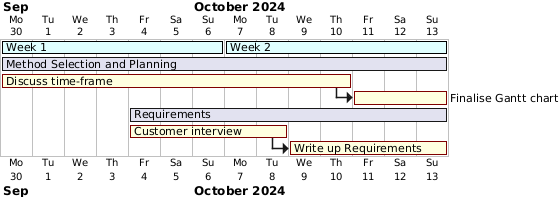
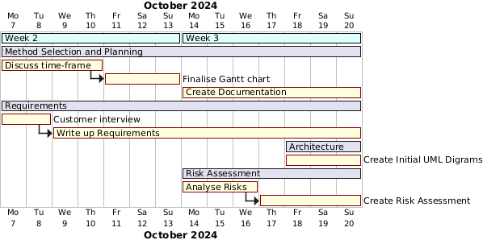
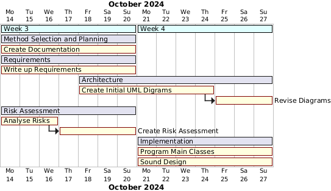
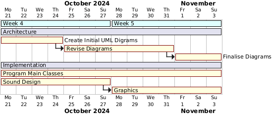
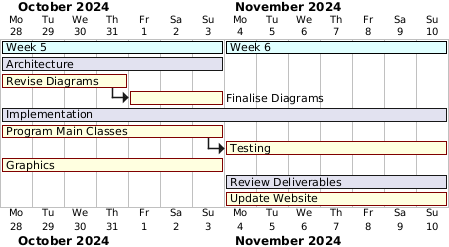

Week 1
During week 1 we sat down and discussed the project as a whole. After coming up with a basic plan for the game we created a spreadsheet to equaly distribute the work. On Friday's meeting we all came together to come up with a list of requirements and questions for our client in next weeks interview.

Week 1's Gantt chart
Week 2
During week 2 we finished off our interview questions and had our meeting with the client. Following this meeting we began work on our requirements. On Friday's meeting we discussed the timeframe of the whole project and started to create an initial gantt chart (pictured bellow) outlining when important tasks would start and finish.

Week 2's Gantt chart

Initial Gantt chart
Week 3
During week three, after our very insightful meeting with the client,
we could finally start on creating the requirements for our game.
We tried to get down all of the requirements as soon as possible so
that we could start implementing our game. By the end of week 3 we also
finalised the overview of our project timeline gantt chart.

Week 3's Gantt chart
Week 4
During week 4 we realised that we may have needed a bit more time to finalise the requirements and so we kept developing them through to the end of the week. During this week we also worked on the risk assessment and began working on designing our games architecture.

Week 4's Gantt chart
Week 5
During week 5 we started implementing the game. We started a little later than we would have liked to, however we had to make sure that we were concrete with our design ideas and initial architecture before we could start programming. During this week we also continued working on the architecture document, a bunch of team members developing the game, whilst the rest of the team would be designing the next steps that had to be implemented. Whilst working on the coding, we also started work on the assets of the game. We started to design both the background tiles and the building textures that would be used in the game. We also started work on creating music and sound effects for the game at around the same time.

Week 5's Gantt chart
Consolidation Week
By consolidation week we were applying finishing touches to our architecture document which meant we were only left with coding and assets design left to do. During this week the majority of the game was implemented. During the coding process we made sure that we were constantly referencing the architecture document and evolving our design document to fit our requirements. We went through a couple of iterations of the structural class diagram, and finally settled on a configuration that worked well.
Week 6
During week 6 the majority of the game had been coded, the only thing that was left now was to go through the game thoroughly and uncover any bugs that may have crept in. We did end up running into a window resizing issue, which meant that whenever we tried placing down buildings sometimes the mouse would be offset to the building texture on the screen, but after a day of brainstorming we managed to fix it.
Week 8: 18th - 22nd Nov
This week was the group selection phase. However, we did begin reviewing every deliverable and the game in more detail during the Friday practical session. This was to help us gain a brief overview of what needs to be changed (or not). In addition, we sorted out the management aspect and appointed our project manager to keep track of tasks and the general schedule. We also discussed the timeline and decided on our internal deadlines to ensure we deliver our assessment on time.
Week 9: 25th - 29th Nov
After asking our client and getting feedback from them, we were able to finalise what new requirements we needed to add and which original ones needed changing. E.g., we asked about the required events and what they would like to see; by doing so, we could use it to back up our events to be implemented.
As requirements were firmed, we could begin our implementation and update the requirements table and architectural diagrams. We cloned the new website, reviewed the existing code, and fixed the GitHub workflow file.
To keep things organised, we kept a document of our timeline and updated our systematic plan alongside the Gantt chart. These two will be updated regularly up until our internal deadline of 10/01/2025. We also adjusted the deadline for the change report as it’s dependent on the method section, and in general, cannot be finalised until all deliverables from Assessment 1 have been updated.
Week 10: 2nd - 6th Dec
We discussed how to identify and manage the changes we make to the deliverables, by which we decided to highlight the things we changed and added in different colours. We continued to implement new features like events and achievements to our UML architectural graphs and updated the change report with respective edits. We analysed and formalised the new risks and updated the change report accordingly. For implementation, we worked on adding new features to the game.
Week 11: 9th - 13th Dec
We discussed and planned our user evaluation, including preparing documents and creating a Google Form. By Friday (our last practical session), we successfully implemented the prototype version of our chosen game, following the Assessment 2 product brief. This allowed us to begin our user evaluation phase, whereby we had 7 volunteers play the game and answer our short Google Form. The deadline for architecture is set to end alongside finishing version 2 of the game with feedback-focused updates, to ensure the architecture reflects and represents the implementation fully.
Week 12: 16th - 20th Dec
From the open-ended feedback gathered by our Google Form, we were able to pinpoint specific areas that needed fixing or extra details to add to allow for a better user experience. The implementation and architecture sections were finalised simultaneously.
For the requirements section, we revised the requirements table (based on user feedback) and added extra research evidence. This enabled us to wrap up the change report for its respective section.
Our user feedback was compiled and analysed to create a usability problem table with scales to measure and prioritise the problems we collected; the user evaluation report was completed in the set timeframe. Section 2a of the change report was written up this week.
Week 13: 23rd - 27th Dec
As this was Christmas week, most of the team was busy due to personal commitments, so little was achieved. Hence, there is no update on the Gantt chart.
Week 14: 30th Dec - 3rd Jan
Our team's progress slowed down significantly due to a lack of communication and slow responses from members as it was still the holidays. This meant that we started on the latter sections of Assessment 2 later than we’d hoped.
Throughout the implementation process, our team have consistently practised continuous integration, whereby our members updated and shared their progress almost daily and multiple times a day. This week we have started writing the first part of the continuous integration report.
Started on software testing and added style check testing and automated it. Afterwards, we manually went through the entire project refactoring it to pass all the style tests. The framework for unit testing was created and also automated during this week. We had three members working on software testing as a part of the implementation section, hence there was a handover, resulting in a delay in the workflow for this area.
Week 15: 6th - 10th Jan
This week marks the final week of our Assessment 2 timeline as we have set the 10th Jan as our internal deadline for our submission. This also means that the methods and planning section will be finalised this week (as the Gantt chart will be done), along with its respective change report section.
We are still working on software testing, where we are writing the report and continuing to set up unit and manual tests along with its test plans.
To finish up our continuous integration section, we are writing up the CI infrastructure we have set up for our project.
After finalising all deliverables (such as the remaining implementation part b and architecture change report), we will upload everything onto the website.
Week 16: 13th Jan
From the beginning of the project, we set our internal deadlines to support a timely submission. We managed to submit our project three days before the external deadline. There is no update to the Gantt chart as we have now finished Assessment 2.